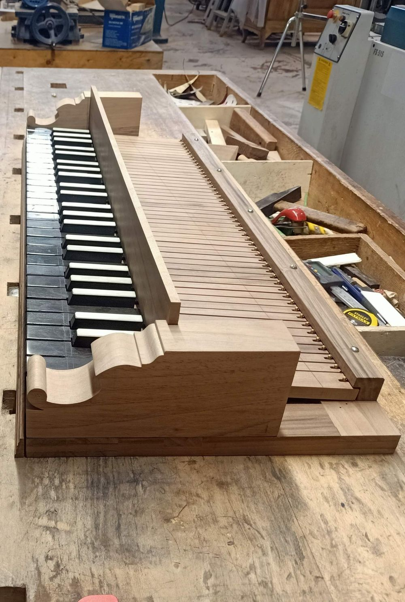
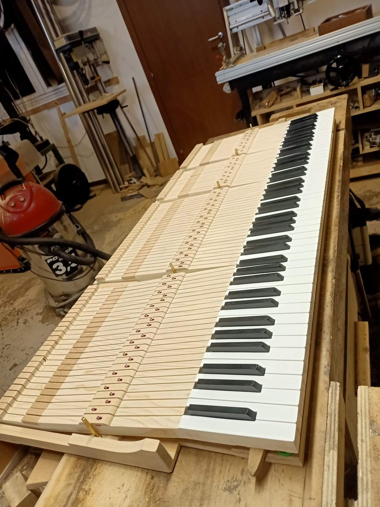
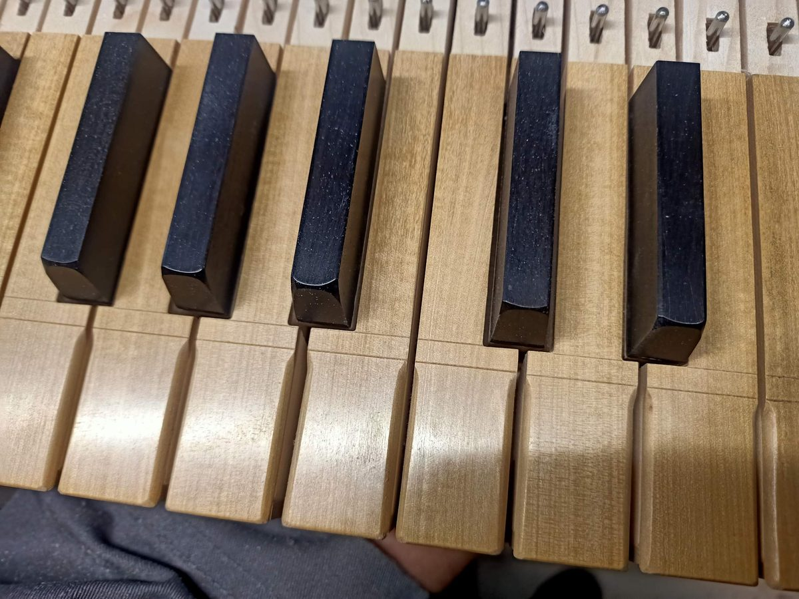
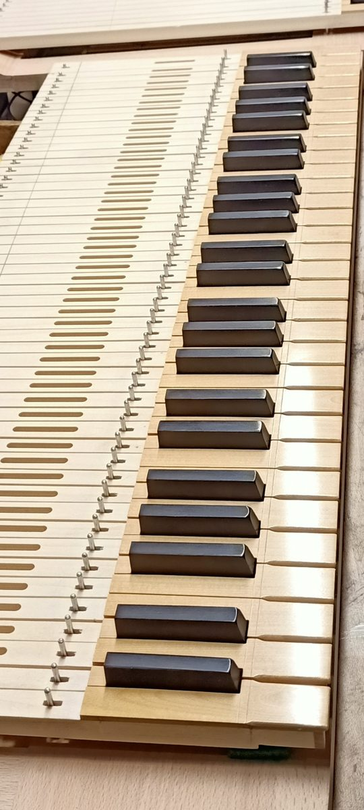
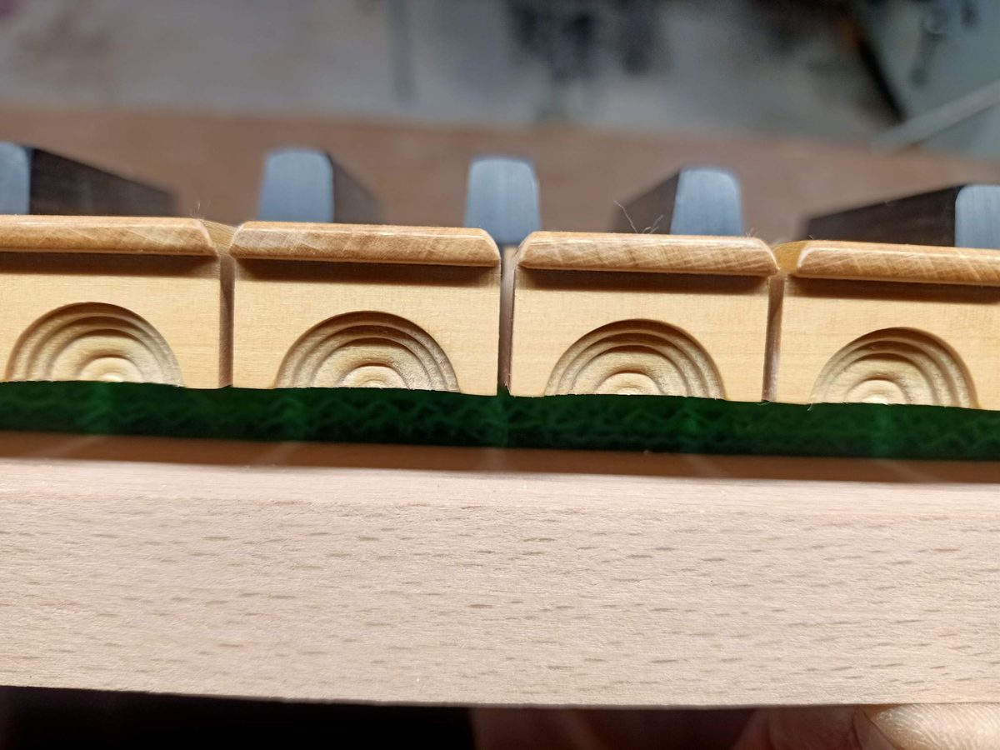
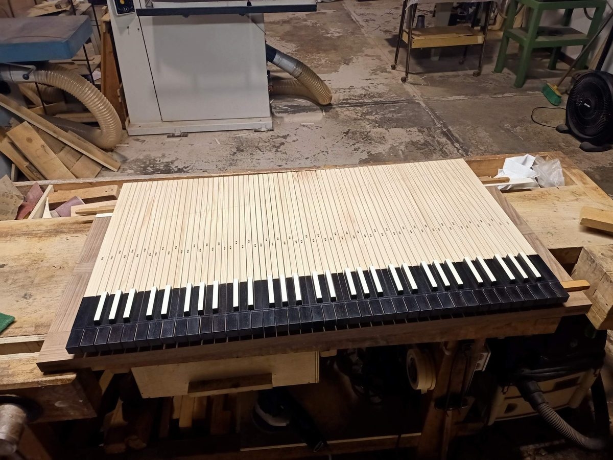
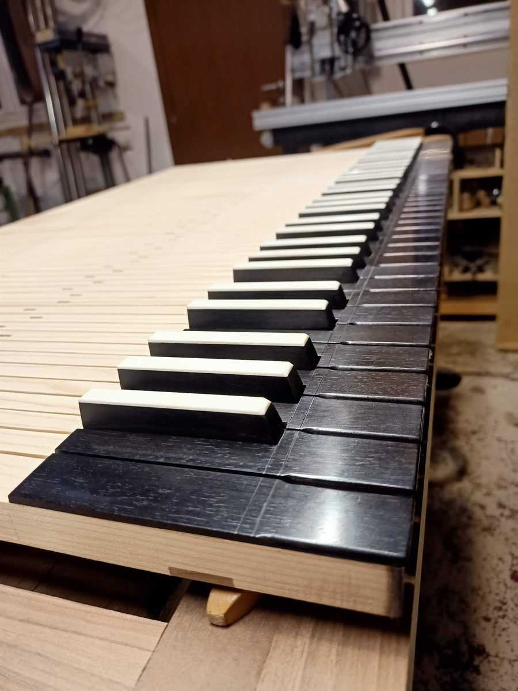
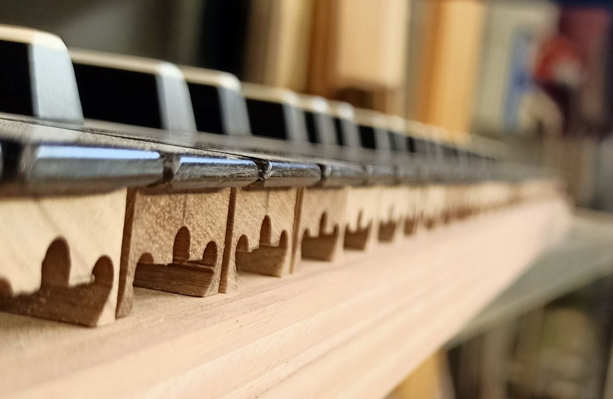
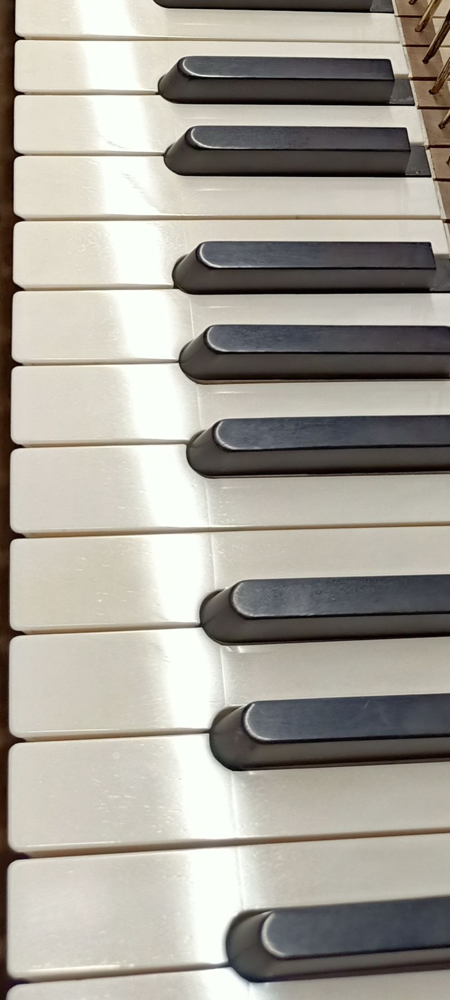
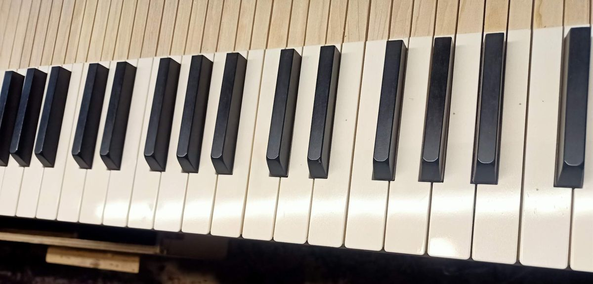

Realizziamo tastiere su misura, in copia o su disegno del cliente.
Costruiamo le tastiere con i migliori materiali a disposizione, rispettando, se richiesto, le specifiche filologiche.
I telai sono realizzati in essenze dure, come faggio o noce, oppure in abete con inserti duri per le punte.
Realizziamo anche modiglioni semplici o sagomati, provvisti di eventuali cerniere per la sovrapposizione nelle consolle.
Le coperture dei tasti possono essere in materiali plastici o in osso per i tasti bianchi, oppure in legno pregiato.
Anche i diesis possono essere realizzati in diverse essenze, come ebano, ebano ricoperto d'osso, noce, pero o altre essenze su richiesta.









